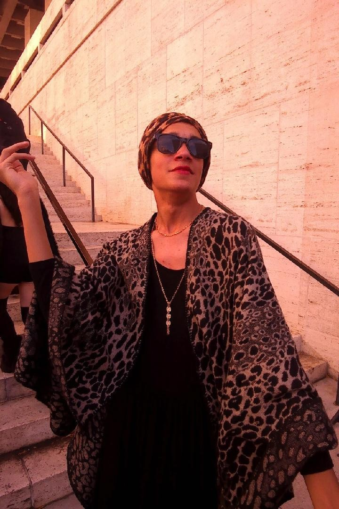

The Many Normas of Sunset Boulevard
A guide by Jonah Fisher

Who is Norma Desmond?
Norma Desmond is the main antagonist of Billy Wilder's 1950 film Sunset Boulevard. She is a former movie star who has faded into a reclusive lifestyle, but is constantly preparing a grand return. The film focuses on her fragile mental state and eventual descent into madness brought about by a torrid love affair with young writer Joe Gillis.
Norma was first potrayed by Gloria Swanson on film, who cemented the character's diva status. It seemed that no one would ever recreate the drama and granduer of Norma Desmond's delusions, but her story was not yet over. In 1993, Sunset Boulevard The Musical debuted on London's West End. It retold Norma's melodramatic tale and offered the chance for several actresses to take a stab at the role.
Some Normas you might want to know:
1. Patti Lupone
:max_bytes(150000):strip_icc():focal(439x374:441x376)/Patti-LuPone-02-102522-b0042e54548145c295f608044e47d87d.jpg)
The original stage Norma, Patti Lupone brought her insanely powerful vocals to the role. To this day, she remains the only diva who could comfortably sing the show's score without needing to modify the notes. Unfortunately, her time with the show ended dramatically when Andrew Lloyd Webber fired her secretly, leading to a one million dollar lawsuit and long standing feud. Still, the sheer iconicness of Ms. Lupone's performance can never be forgotten.
2. Betty Buckley

Broadway's second Norma and my overall favorite, Betty Buckley delivered a balanced and devastating performance. While she leaned into the camp of the role, she also found moments of profound emotion within Norma. She's well known for being one of the great personalities of the Broadway stage, and family friends of mine who saw her back in 1995 described her performance as genuinely evoking fear in them.
3. Diahann Carroll

Diahann Carroll was the first and only African American actress to play Norma. Andrew Lloyd Webber famously canceled her audition last minute, prompting Carroll to chase him to the airport to sing for him. The world is lucky that she did, because her take on Norma is entirely unique from any other. She somehow plays the role both fragile and full of strength, and her eventual madness is potrayed in a visceral way (look up a bootleg of her finale!).
4. Nicole Scherzinger

Nicole Scherzinger headlined the 2024 West End revival of Sunset Blvd and its subsequent Broadway transfer. Her Norma was younger, loopier, and much more sinister than any other actresses. The production infamously ended in her alone onstage drenched in blood, a striking image that launched the show back into public conversation. As the most recent diva to play Norma, Scherzinger has proved the versatility of the character's story.
5. Jonah Fisher

In sophomore year, I dressed up as Norma, and felt pretty cool. I still own the turban and shawl, and break it out often for dramatic flair. I guess you could say I'm ready for my closeup!
How to dress up as Norma Desmond:
If you've been bitten by the Norma Desmond bug, you may be thing: "How do I live my reclusive movie star dreams?" Here's how to build the perfect Norma Desmond costume!
- Sunglasses - Every Norma Desmond needs a pair of black sunglasses to dramatically take off. Remember, she can say anything she wants with her eyes, so it's good to keep them protected
- The Turban - almost every Norma enters the movie/show in a shiny cheetah print turban. Even Jamie Lloyd's minimalist production paid homage to the iconic accesory, so don't neglect it.
- The Shawl - Perhaps the hardest piece to come by, the shawl should match your turban. You want something long and flowly that drapes off the arms for best effect. If you're aiming to look more like Gloria Swanson, a cheetah-print-lined black robe also works.
- The Black Dress - The black dress can go under the shawl to complete the look. If you're dressing as Scherzingr's Norma, you can forgo numbers 2 and 3 and replace them with a ton of fake blood.
Feel free to mix and match these items, add lots of jewlery and accesories, and have fun with it. There's no such thing as too much when you're Norma Desmond.